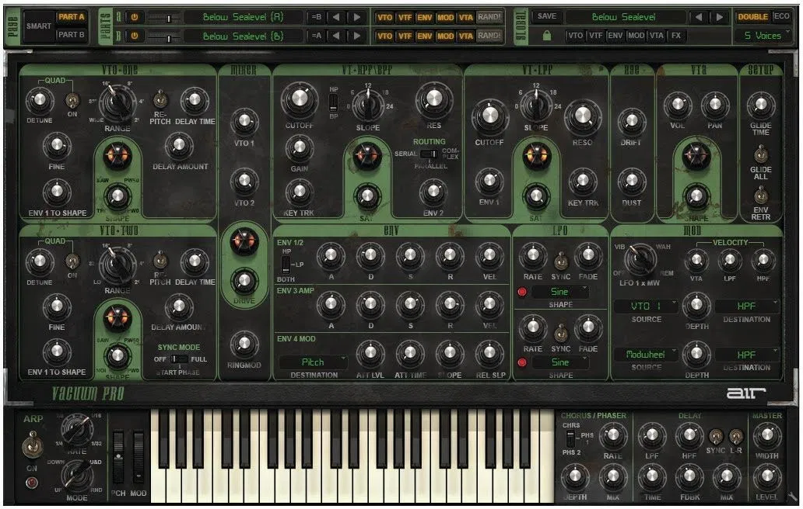

Search
Log In
|
Register
Home
Our Articles
All Our Articles
New Releases
Reviews
Tutorial
Opinion
Deals
User Articles
All User Articles
New Releases
Reviews
Tutorial
Opinion
Deals
All News
All Articles
New Releases
Reviews
Tutorial
Opinion
Deals
Contribute
Profile
Sign Up
Log In
Why Contribute?
Edit Article

Title:
Summary:
Username123 takes Air Music's Vacuum Pro synth for a spin.
Body:
AIR’s Vacuum Pro originally started life as a monophonic subtractive synthesiser available only in Pro Tools. Along with its breakout from Avid’s DAW, it has now been updated to include new features such as six-voice polyphony, 64-bit support and AIR’s Dual Layer synthesis architecture. Upon opening Vacuum Pro, the type of synthesiser it has been modelled on is immediately apparent. With its one-knob-per-function layout, Russian text and distressed paint job, Vacuum Pro certainly has the looks of a powerful, brutish vintage relic. With an architecture based on two oscillators per layer, separate high-/band- and low-pass filters, four envelopes, a range of modulation options, plus no less than six virtual vacuum tube circuits, there are more than enough ways to create sounds that complement the looks. The Dual Layer synthesis approach isn’t a new feature in the world of plugins (see Lennar Digital’s Sylenth1 for another great example of it in action), but it can be very useful for creating complex sounds. There’s a rudimentary mixer along the top of the synth for adjusting the levels between the two. The oscillators offer a sweepable wave shape knob, going from a triangle to a pulse wave. Being able to blend between different waveforms within one oscillator is a strong addition to the synth, as it provides a far larger scope for creating basic, but unusual patches. You can also add in delayed harmonics within the oscillator section, which creates some very interesting evolving sounds. However, I found the Quad oscillator mode slightly overpowering. With the tiniest levels of detuning, the patch lost all subtlety and turned immediately into a peak-time rave weapon. Some people may find that useful, but the all-or-nothing nature of the feature is too much for my taste. Saturation is a big part of what makes this synth special – with up to six separate stages to dial it in, there’s more here than on any other synth I’ve ever come across. I did find, however, that if you didn’t use any saturation throughout the patch, things sounded quite stale and unexciting. It seems almost as though this is a synth which relies on cranking up the saturation levels to create the sounds it wants to be associated with. That’s by no means a critique of the sounds it’s capable of; creating impressive and attractive patches is easy and the final product is certainly up there with other synths in its class. However, it’s a shame that a little more excitement can’t be dialled in through the raw oscillators and filters before resorting to saturation. Vacuum offers a very useful feature for providing inspiration and adding variation to a track. There are five different sections (Oscillators, Filters, Envelopes, Modulation and Effects), any of which can be locked while other sections of the synth are randomised. It’s a great tool when you have a sound and want to create a slightly different variation for progressions within a track. AIR also say that the synth possesses a feature known as Smart Sound Randomization so that the results wont be wildly different from the starting point, but far enough away to provide an interesting substitute. In other words, it’s not a true randomisation but a more organic-sounding form of sound evolution. Vacuum Pro is an impressive synth, and enjoyable to use, but there are minor issues. The reliance on saturation is a problem and the Quad oscillator detune mode feels like it needs a little work to make it more useable. But despite those issues, this is a powerful synth which can turn its hand to a wide range of sounds. At a fraction under $200 it’s not quite a bargain, but the price is fair.
Tag:
Select Tag:
New Releases
Reviews
Tutorial
Opinion
Deals
Article Picture: